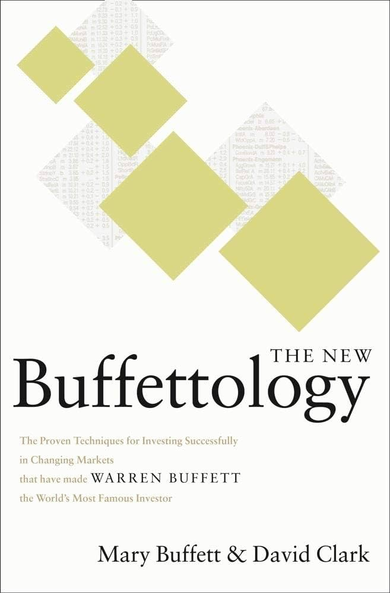

Ian Goh
Two winters ago, I went to Europe with my family. We visited a few cities in
Germany, Austria, the Netherlands, and Paris. One of the highlights of this
trip was the christmas markets, which I visited every day. Each market in
different city sell different food and souvenior, and I was always existed
to discover what delicious food or exquisite items I might find next.
Besides the good food, Salzsburg and Amsterdam were the cities I enjoyed the
most during my trip.
If I have a pet, I will name them like:
- A golden retriever named buddy
- A rabbit named Peaches
- A british shorthair cat named smokey
Angelo's Pizzeria
is my favorite because they have the best pizza and strombolis I ever
tried in US. In my opinioin, their food is better than a lot of high end
restaurant, but the price is around two-thirds of what you's pay at
those restaurant. The cozy atmosphere also adds to the experience,
making it a great place to enjoy dinner with family or friends.

My favorite food is nasi lemak, a malaysia traditional food commonly eaten
for breaksfast or lunch. It consists of fragrant coconut rice, sambal
(spicy chili paste), crispy anchovies, peanuts, and a boiled egg, and
cucumber slices. Personally I would like milder sambal if I have it in the
morning. Besides that, I also love pairing it with milk tea or ice coffee
for a satisfying meal.
Four of my favorite books
| Name of the book |
Image of the book |
Author |
Summary |
| Buffetology |

|
Mary Buffett,David Clark |
Providing insight into trading strategies of Warren Buffett,
focusing on his method of identifying fair companies with long term
growth potential.
|
| Common Stocks and Uncommon Profits |

|
Philip A. Fisher |
Emphasizing the importance of investing in high-quality companies
with strong growth potential, focusing on thorough research and long
term prospects.
|
|
The Undercover Economist Strikes Back: How to Run or Ruin an Economy
|
|
Tim Harford |
This book analyze how economies function and government policies can
impact growth, inflation, and unemployment.
|
| The Essays of Warren Buffett: Lessons for Corporate America |

|
Warren Buffett, Lawrence Cunningham |
This book compiled Buffett's wisdom on business, investing, and
corporate governance, drawn from his letters to Berkshire Hathaway
shareholders.
|